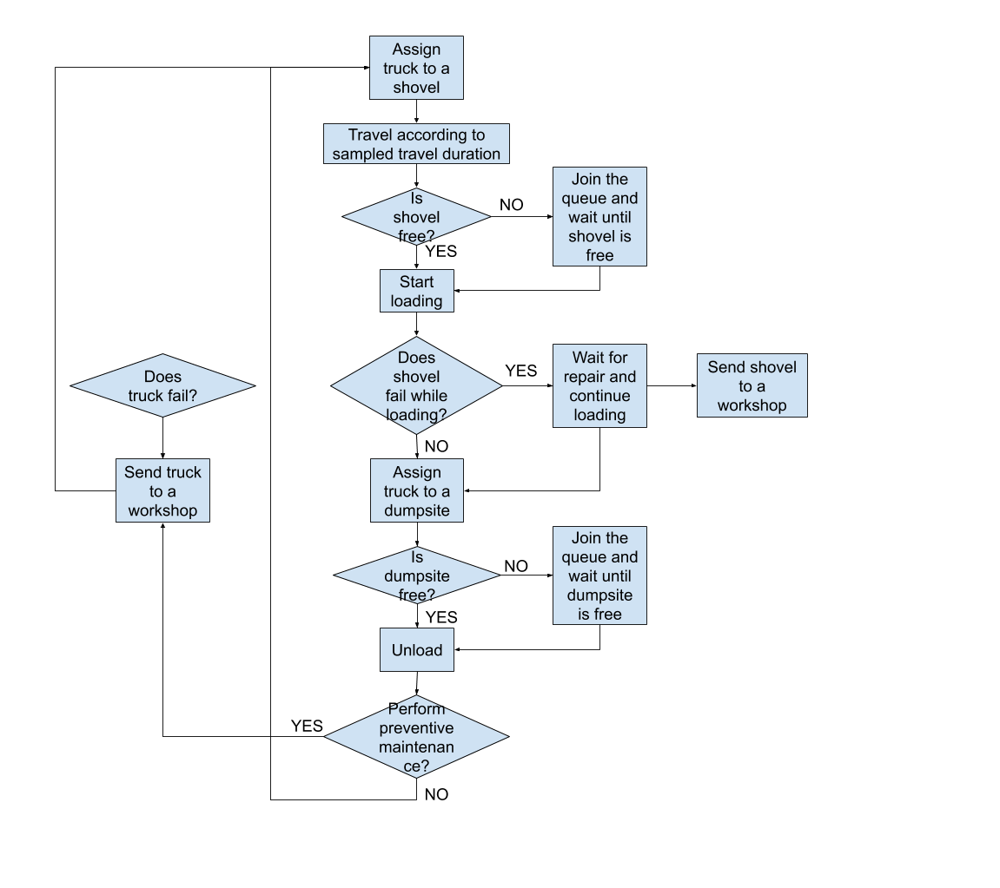
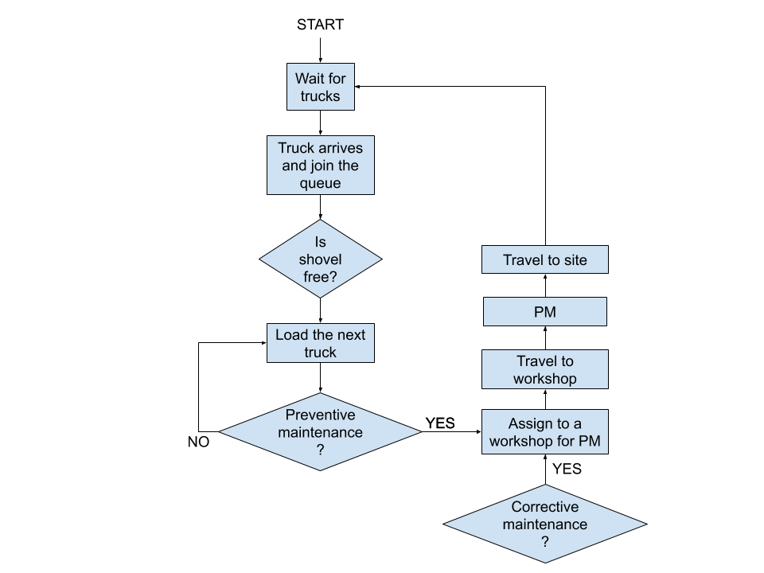
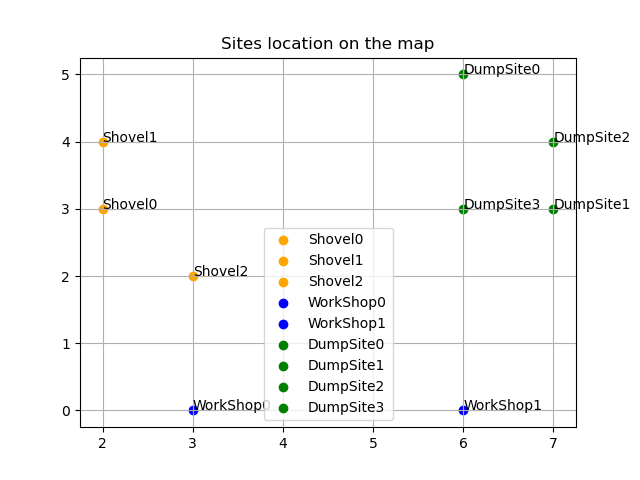

Workflows¶
The items in the mine interact with each other and follow a precise workflow. The workflow of each item is presented in the following.
Trucks workflow¶
Truck workflow is summarized in the following flowchart. A truck could fail in any moment, excluded when it is under repair.
Shovels workflow¶
Shovel workflow is summarized in the following flowchart. The tasks to be performed are really easy; the shovel might fail in any moment
Map of the mine¶
In the following, a map of the mine is represented according to the actual configuration of sites.
